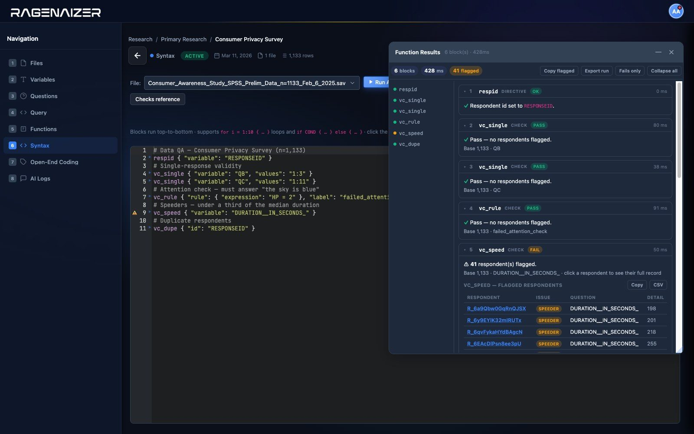
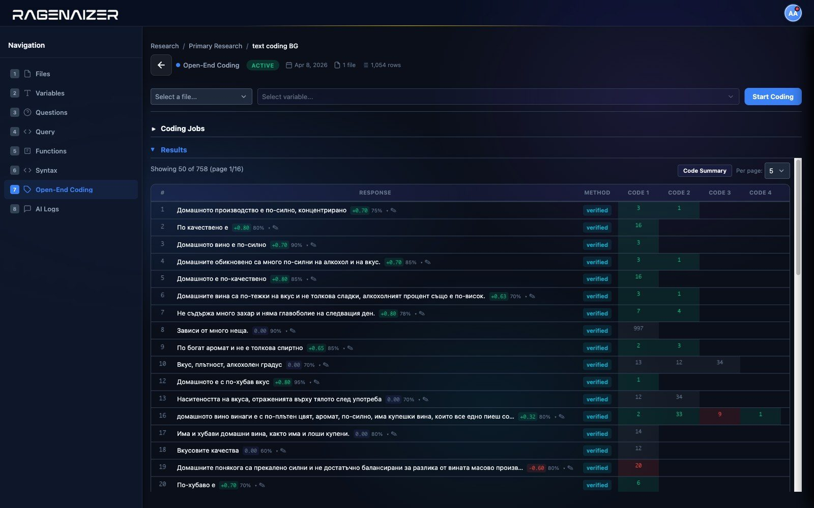
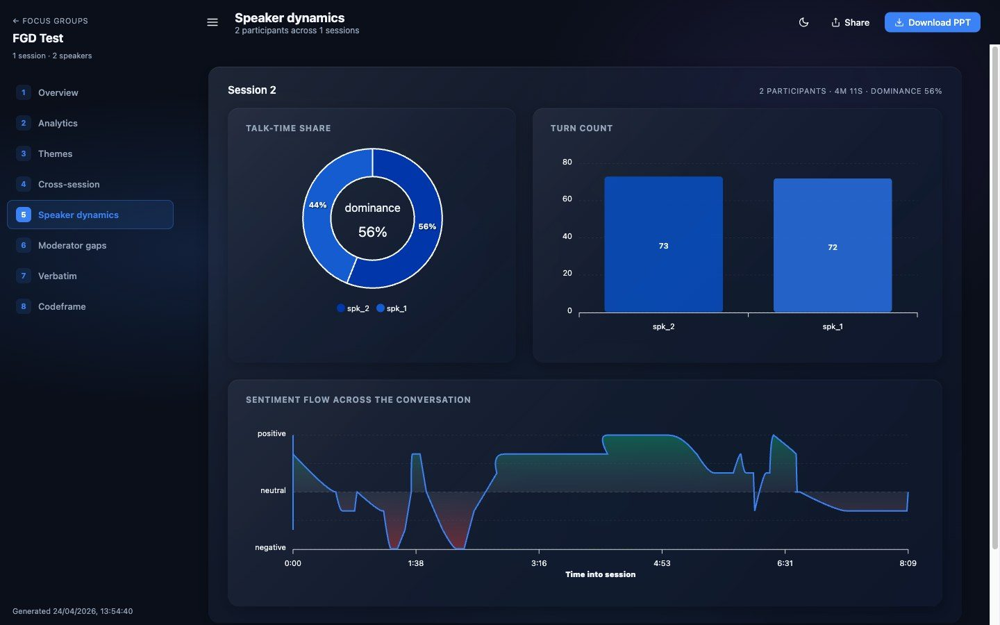
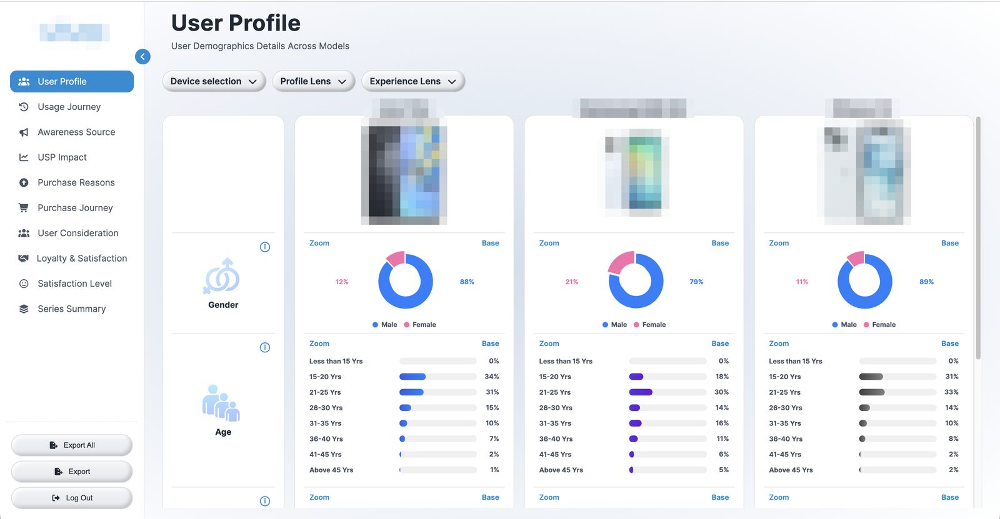
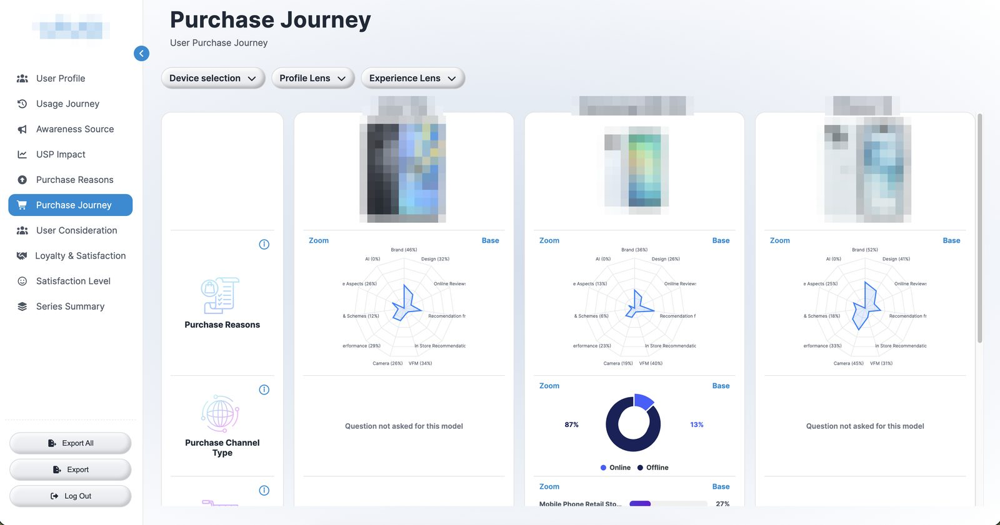
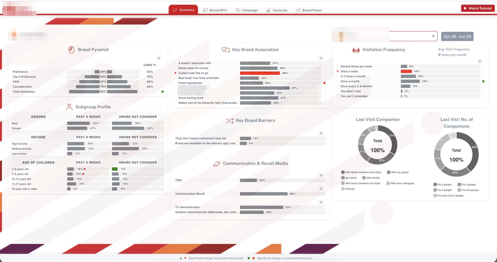
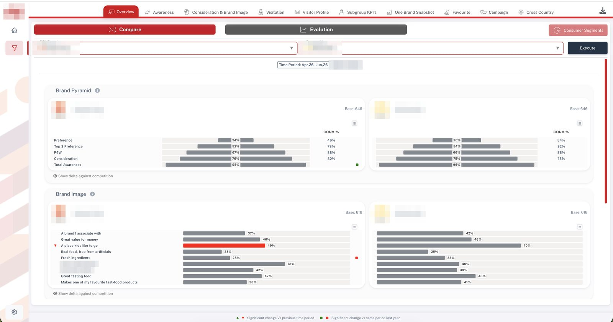

The entire market-research back office. One platform.
SPSS in, boardroom out. Ragenaizer Research runs the whole chain — ingestion and wave management, data validation, open-end coding, cross-tabs and advanced analytics, AI insight dashboards, a research copilot, focus-group intelligence and desk research — and when a client needs their own branded tracker dashboard, we build that too.
- Analysis functions (tabs → TURF)14
- Validation & data-prep functions34
- AI dashboard chart types16
- Client tracker dashboards shipped2
Built for big trackers: SPSS files up to 2 GB, hundreds of thousands of respondents, wave stacked on wave without slowing down.
Twelve capabilities. One accountable system.
Everything below is in production on Ragenaizer Research today — not a roadmap. Click through to the part your current vendor keeps getting wrong.
Ingestion & waves
SPSS up to 2 GB, CSV→SAV, wave append with compatibility checks
Data validation
25 automated Data Quality Validation checks mapped to real mandate language
DP & weighting
Recodes, derived variables, RIM / rake weighting with efficiency
Open-end coding
Aspect-based AI coding, Net→Theme→Sub-theme frames, human review
Tables & significance
Cross-tabs and custom tables with nets, sig letters, effective bases
Advanced analytics
Key drivers, segmentation, TURF, correlation, trend decomposition
AI insight dashboards
Auto-generated, 16 chart types, replayable on the next wave
AI copilot & chat
Ask the data questions in English; embed a branded chatbot anywhere
Focus groups
Diarised transcripts, themes, speaker dynamics, structured reports
Secondary research
Brief in, AI desk-research dashboard out — sourced and shareable
Questionnaire intelligence
.docx parsing into structured questions, mapped onto the SPSS file
Custom client dashboards
White-labelled tracker dashboards, built when BI tools hit their ceiling.
SPSS-native in, wave-aware forever.
Upload the .sav your field agency already delivers — variable labels, value labels and measurement types all survive the trip. Behind it sits an engine built for tracker scale, so a 50-question study with a few hundred thousand respondents still tabs in seconds.
Native .sav ingestion up to 2 GB per file, with the full data map — labels, value labels, variable types — preserved end to end.
A built-in converter turns raw CSV into a proper labelled SPSS file for teams whose panel exports don't come as .sav.
Stack tracker waves onto one dataset. A dry-run compatibility check classifies schema differences before commit — no corrupted trackers.
Variables are auto-grouped into logical survey questions — grids, multi-punch sets, singles, numerics — so every downstream tool thinks in questions, not columns.

Built to match how research firms actually write Data Quality Validation mandates.
If your validation spec talks about routing compliance, exclusive-choice breaches, allocation totals and fraud triage — every line of it maps onto a named, catalogued check below. Nothing lives in an analyst's head.
Routing and masking compliance, checked against the master questionnaire — the pass you run the moment the soft-launch dataset lands.
vc_skipAnswered when not asked, blank when asked — full skip-logic compliance per routed variable.vc_gateItem-by-item gating across matched batteries (each statement asked only when its base item qualifies).vc_funnelBrand-funnel integrity: no usage without awareness, no consideration without salience.vc_multiMulti-punch hygiene including exclusive-option breaches — "None of the above" ticked alongside a real answer.vc_single · vc_gridSingle-punch and grid punches validated against the code frame; out-of-range and missing flagged per cell.vc_codesUndefined codes — any punch with no matching value label anywhere in the file.vc_rank · vc_rotation · vc_fillorderTied or incomplete rankings, corrupted rotation orders, multi-punch slots that skip positions.
Every numeric entry held inside the bounds the questionnaire promised — including the allocation grids where respondents type a zero across the whole row.
vc_rangeFloor / ceiling on any numeric write-in — age, spend, percentages, 0–100 ratings — single variables or whole blocks.vc_sumConstant-sum / auto-sum compliance: allocations must hit the target total, with a configurable tolerance. Blanks count as zero, so incomplete allocations surface too.vc_flatline value:0The all-zero allocation grid — a respondent entering 0 in every numeric field of a matrix — caught as its own named flag.vc_outlierStatistical outliers by z-score or IQR — the ₹8,00,000 monthly grocery spend in a sample that tops out at ₹50,000.vc_datesInterview timestamps that end before they start; any start / end pair sanity-checked.vc_emptyQuestions that are blank for the entire base — the pipe that never fired, the punch that never landed.
The quality-triage layer: who is real, who is rushing, who is on autopilot. Each flag carries the evidence, so triage decisions are defensible.
vc_dupeDuplicate respondent IDs within the file — plus identity collision against prior waves via a known-ID baseline you carry forward run to run.vc_speedSpeeders by median-fraction (adapts to actual survey length) or an absolute cut-off — with the option to freeze the baseline on soft-launch completes so the cut-off never drifts mid-field.vc_flatlineStraightliners: the same punch down an entire grid, with a minimum-items threshold for partly-filled batteries.vc_patternAlternating responders (1-2-1-2 down the grid) — the inattentive pattern plain straightlining checks miss.vc_textdupCopy-paste verbatims — one respondent reusing an answer across questions, and identical answers appearing across different respondents.
Verbatim hygiene before a single response reaches coding — and a compliance pass your DPO will actually like.
vc_texteffortLow-effort filler ("na", "dk", "nothing", "-") counted across a respondent's open-ends, with configurable phrase lists and thresholds.vc_textformatType confusion: "many" typed into an income box, "1234" typed into a name field.vc_piiEmails and phone numbers left inside verbatims — the report shows only the PII type found, never the contact detail itself.vc_ruleFree-form cross-question logic: write any condition that should never be true for a clean interview ("under 18 yet marked complete") and label it for the QA report.csharpAnd when the mandate doesn't fit any template — a sandboxed scripting block. See below.
Every check accepts a filter expression, so bases are honoured: respondents never asked a question aren't flagged for skipping it.
Flags land per respondent, per variable, with the offending value and rule attached — a QA report you can hand straight to the panel provider.
The validation script is an artifact. Soft launch, main field, top-up sample, next wave — same rules, zero drift, one click.

The validation & DP catalogue. All 34.
This is the live spec — the same catalogue our platform exposes to analysts and to the AI copilot. If a mandate names a check, we can point at the exact function that runs it.
| FUNCTION | KIND | WHAT IT DOES |
|---|---|---|
| compute_variable | Data-prep | New coded variable from ordered IF / ELSE-IF / ELSE conditions — segments, nets, age and value bands |
| rim_weighting | Data-prep | RIM / rake weights to hit interlocking quota targets; reports per-cell fit and weighting efficiency |
| vc_any | Data-prep | 0/1 any-punch net across a battery (e.g. used any premium brand) |
| vc_calc | Data-prep | New numeric variable from an arithmetic formula across existing variables |
| vc_count | Data-prep | Per-respondent count of punched cells across a set (brands aware, items owned) |
| vc_numvert | Data-prep | Text-to-numeric conversion so a text-typed field can be tabbed and range-checked |
| vc_recode | Data-prep | In-place old→new code mapping with keep / blank / catch-all handling for unlisted codes |
| vc_reverse | Data-prep | Reverse-code scale items around their endpoints before averaging reverse-worded batteries |
| vc_rowstat | Data-prep | Per-respondent sum / mean / min / max across numeric variables |
| csharp | Check + script | Bespoke scripted check for any rule or derivation the built-ins don't cover (details below) |
| vc_codes | Check | Undefined codes — data values with no matching value label in the code frame |
| vc_dates | Check | End-before-start on any date / timestamp pair (interview timing sanity) |
| vc_dupe | Check | Duplicate respondent IDs in-file, plus cross-wave repeats against a known-ID baseline |
| vc_empty | Check | Variables completely blank for the base — pipes that never fired |
| vc_fillorder | Check | Multi-punch slots that skip positions; punches outside the allowed codes |
| vc_flatline | Check | Straightliners on grids — including the all-zero allocation matrix as a targeted flag |
| vc_funnel | Check | Funnel integrity across matched batteries — no downstream pick without its upstream pick |
| vc_gate | Check | Item-level ask / skip gating across matched batteries, with optional range enforcement |
| vc_grid | Check | Grid / battery punches out of range or missing, per statement, per respondent |
| vc_multi | Check | Multi-punch hygiene: bad punches, missing, nothing ticked, exclusive-option breaches |
| vc_outlier | Check | Unrealistic numeric answers by z-score or IQR, with segment-scoped baselines |
| vc_pattern | Check | Alternating response patterns (1-2-1-2) down a grid — inattention that flatline checks miss |
| vc_pii | Check | Emails / phone numbers inside open-ends; reports the PII type only, never the detail |
| vc_range | Check | Numeric floor / ceiling violations on write-ins, single variables or whole blocks |
| vc_rank | Check | Ranking questions: out-of-range ranks, ties, incomplete forced rankings |
| vc_rotation | Check | Rotation-order records: duplicate items in the sequence, invalid item IDs |
| vc_rule | Check | Any cross-question logic rule, written as a condition that must never be true, with a report label |
| vc_single | Check | Single-punch questions validated against the allowed code list; missing flagged |
| vc_skip | Check | Skip-logic compliance per routed variable: leaked past the skip, or missing in universe |
| vc_speed | Check | Speeders by median-fraction or absolute threshold, with freezable soft-launch baselines |
| vc_sum | Check | Constant-sum / allocation totals with tolerance; incomplete allocations surface as misses |
| vc_textdup | Check | Duplicate verbatims — within one respondent's answers and across different respondents |
| vc_texteffort | Check | Low-effort open-ends: filler-answer counting with custom phrase lists and thresholds |
| vc_textformat | Check | Type confusion in typed fields — text in number boxes, digits in name boxes |
Every function is documented with parameters, defaults and worked examples — and the same catalogue drives our AI copilot, so an analyst can ask for a check in plain English and get the exact validated call.
When the spec has a rule no template covers, we script it.
Every real Data Quality Validation spec has that one clause the standard checks don't cover. Our platform has a scripting layer for exactly that: the rule from your mandate document becomes a bespoke check that flags respondents, or a dataset script that builds helper variables — and then behaves like any other check in the run.
- 01Any rule from your spec. If the mandate can describe it, we can script it — cross-question logic, bespoke quality scores, helper variables for later checks.
- 02It can only touch the survey data. Scripts run in a locked-down environment with hard limits — they read the dataset and write flags or variables, nothing else, and a runaway script stops itself instead of your run.
- 03Versioned with the run. Bespoke rules are saved as part of the validation setup, so the same check re-runs identically on every batch, top-up and wave.
// Flag: aware of 2+ brands but gave a throwaway "why"
int aware = 0;
if (data.QAWARE_1 == 1) { aware++; }
if (data.QAWARE_2 == 1) { aware++; }
if (data.QAWARE_3 == 1) { aware++; }
string why = (data.QWHY ?? "").Trim();
return aware >= 2 && why.Length < 4;double n = Compute("AGE_BAND",
"multiIf(AGE < 30, 1, AGE < 50, 2, 3)");
Print("AGE_BAND set for " + n + " respondents");
Compute("HIGH_SPEND", "QSPEND > 5000 ? 1 : 0");
if (n == 0) { Delete("AGE_BAND"); }The first kind flags respondents; the second builds variables that later checks and tables can use. Either way it reads close enough to plain English that your QC lead can review the rule line by line before sign-off.
From raw export to tab-ready data.
The unglamorous middle of every project — done with named, repeatable operations instead of one-off syntax nobody can re-run.
Coded variables, nets, bands
Ordered IF / ELSE-IF logic builds segments and bands with value labels attached, ready to tab immediately. Any-punch nets, counts, row statistics and formula variables cover the rest.
Recode · reverse · convert
Scale collapses with explicit handling for unlisted codes, reverse-coded battery items fixed before averaging, text fields converted to clean numerics. All in place, all filter-aware, all logged.
RIM / rake weighting
Multi-factor rim weighting to gender, age, region or any quota set — per wave or whole sample. Output includes achieved-vs-target per cell and the weighting-efficiency figure your QA sign-off needs.
One verbatim, every claim inside it — coded and scored.
Aspect-based coding, not bucket-sorting: a single answer decomposes into atomic claims, each assigned its own code, sentiment and confidence. The hardest text task in market research, treated like one.
"The product quality is amazing, but customer service was terrible and I had to wait 3 hours. The price is reasonable though."
| ATOMIC CLAIM | CODE | SENT. | CONF. |
|---|---|---|---|
| Product quality is amazing | PROD_QUALITY | +0.9 | 0.96 |
| Customer service was terrible | CUST_SERVICE | −0.9 | 0.94 |
| Had to wait 3 hours | WAIT_TIME | −0.7 | 0.91 |
| Price is reasonable | PRICE | +0.5 | 0.93 |
Industry-standard Net → Theme → Sub-theme hierarchy — Positive / Negative / Neutral / Miscellaneous nets, numbered codes underneath.
Excel export keyed to your respondent ID, coded themes tab-ready as openend_frequency / openend_cross_tab against any variable.
- 01 Codeframe discovery. The AI proposes a codeframe from a sample of real responses — target code count and context configurable — and a human curates it before anything is coded.
- 02 Dedupe & cluster first. Survey verbatims are massively repetitive — trivial answers are filtered and near-identical ones grouped before any AI coding happens, so effort goes into genuinely different responses. That is what makes large volumes affordable.
- 03 Two-pass AI coding, QA-audited. Pass one decomposes each response into atomic claims; pass two classifies against the codeframe and scores sentiment. A random slice is independently re-verified and high-disagreement clusters go to human review — accuracy is measured, not asserted.
- 04 Wave-aware. When the next wave lands, "code new rows" inherits the existing codeframe — trend lines stay comparable instead of every wave inventing new themes.
- 05 Auditable end to end. Progress tracking on every coding job, per-row edits by analysts, a full audit log, and a cost report per job. Mixed-language verbatims are first-class.

Tables an SPSS veteran will sign off.
Significance letters, weighted bases, effective bases, nets and sub-nets — the conventions research directors actually check for, computed the way they expect.
Banner-ready cross-tabulation
- →Z-test for column proportions with letter notation (A, B, C…), at 90% / 95% / 99% confidence.
- →Column %, row %, total % or raw counts — with SPSS value labels enriched automatically.
- →Three base rows on every weighted table: unweighted, weighted, and effective base (Kish design-effect), so significance is honest about what weighting costs.
- →Descriptive rows (mean, median, std-dev, min, max) alongside the distribution.
The DP-grade table engine
- →Rows and columns can be anything you'd write in a tab spec — any base, any cut, no pre-coding needed.
- →Nets and sub-nets with row basing: percentage a child row against its parent net instead of the column total.
- →Measures beyond counts: means (Welch's t-test), medians, percentiles — with significance letters on all of them.
- →Table-level weights with per-column overrides, low-base suppression, and whole banks of tables — up to 32 variants — run in one go.
- →Any finished table can be handed to the AI for a written insight summary plus suggested charts — grounded in that exact table, nothing else.

The models behind the "so what" slide.
Driver models, segmentation, portfolio reach — computed in-platform on the full respondent file, with the diagnostics that tell you whether to trust them.
Driver regression
Key-driver analysis with up to 30 attributes: which drivers genuinely move satisfaction or NPS, how much confidence each one deserves, warnings when drivers overlap too much to separate, and an importance-vs-performance quadrant that turns the model into priorities. Run it per wave or per segment and compare.
K-means++ clustering
2–10 segments from up to 30 inputs, profiled across the entire respondent file. Per-segment index scores with high/low flags, diagnostics that show how cleanly the segments separate, warnings when a segment is too small to trust — and re-runs reproduce the same segments exactly, wave after wave.
TURF
Total unduplicated reach & frequency across up to 30 SKUs, flavours or messages — a fast stepwise build, or an every-combination search for the guaranteed best line-up — with binary / top-box / top-2-box reach definitions and step-by-step incremental reach.
Correlation matrix
Pairwise correlations across up to 50 variables, with automatic warnings when variables overlap too heavily — the sanity pass before any driver model or segmentation goes to the client.
Trend decomposition
"Why did NPS drop this wave?" — decomposes the change in an outcome between two periods into per-driver contributions, so the trend slide comes with an explanation instead of a shrug.
Frequencies & descriptives
Weighted holecounts and one-way frequencies with top answers and value labels in place; means, medians, spreads and percentiles by any break variable. The basics, instant and correct.
A first-draft debrief, generated overnight.
Point the AI at a cleaned dataset and it runs the actual research functions — tabs, drivers, frequencies — then assembles an interactive dashboard: executive summary, KPI cards, charts with written insights. Your brief travels with the project, injected as mandatory requirements the AI must honour.
- 0116 validated chart types — gauge, pie, donut, bar, column, stacked bar, line, area, radar, heatmap, scatter, bubble, treemap, radial bar, polar area, box plot — each one checked and tidied automatically, so a broken chart never reaches a client.
- 02Recipes, not one-offs. Every analysis step behind the dashboard is captured as a recipe. When the next wave lands, replay reproduces the same dashboard on the new data — pure computation, no AI variance, no regeneration lottery.
- 03Shareable and measured. Read-only share links for clients, with owner-side view analytics — visits, unique visitors, referrers — so you know the deck actually got opened.
- W1 · GENERATEAI explores the wave-1 file against your instructions, runs ~30 analysis steps, ships a dashboard. Analyst reviews and edits.
- W2 · REPLAYWave 2 appends to the same file. One click re-executes the captured recipe on the new data — identical dashboard, updated numbers, a step-by-step report of anything that no longer applies.
- W2 · EXTENDNeed something new this wave? Regenerate-replay keeps every existing chart and adds new ones from fresh instructions.
The same engine powers secondary-research dashboards: hand it a desk-research brief and it returns a sourced, chart-backed dashboard on the same share infrastructure — see § 12.

Ask the data. In English.
Two conversational surfaces sit on top of everything above — one for your analysts, one you can hand to your clients.
A data-grounded assistant on every project
- →"Cross-tab intent to purchase by city, weighted, and show me what's significant" — the copilot runs the same checks and tables an analyst would, and answers with the chart on screen.
- →Grounded on the project's data map — real variables, real value labels — so answers cite the dataset, not the model's imagination.
- →Anything risky needs a confirmation first, and every question, answer and cost is logged for audit.
Your data, answering questions on any site
- →Publish a white-labelled chat widget over selected data files — your logo, your colors, your name on it.
- →Domain allow-listing and revocable embed keys keep it locked to the sites you approve.
- →Per-widget analytics: sessions, unique visitors, message volumes, token spend — you always know what it's costing and who's using it.
Qual that arrives as evidence, not vibes.
Upload the recording; get back a structured, quote-backed discussion report — the kind a research director can defend in front of a client, because every claim traces to a real utterance.
Diarised, time-coded, translated
Audio up to 500 MB per session. Speaker-separated transcripts with timestamps, source-to-target translation for multilingual fieldwork, and progress tracking through the whole pipeline.
Themes ranked by people, not mentions
A Net → Theme → Sub-theme codeframe built from the sessions, with prevalence counted by distinct speakers, sentiment breakdowns, consensus levels (universal / majority / split), and the tensions where the room disagreed.
Hallucination-proof by design
The AI can only reference quotes by ID — quote text is re-rendered from the actual transcript, so a fabricated quote is structurally impossible. Every report also carries its own cost audit.
Who actually spoke
Talk-time share, turn counts, a dominance index, and "silent voices" flagged under 5% talk time — moderator excluded — plus moderator-gap analysis: themes that surfaced but never got a follow-up question.
Multi-group synthesis
Run one report across multiple sessions: universal findings, per-session divergences, and session-by-session narratives — the structure of a proper qual debrief, generated in minutes.
Share links & SPSS export
Finished reports ship on unguessable read-only links, and the coded utterances export to SPSS .sav — one row per statement, themes as binary flags — so qual findings can sit next to the quant in the same tables.

Desk research, dashboarded.
- →Write the brief — market context, competitor scan, category deep-dive — and the AI researches it into a structured dashboard: sources, summaries, key findings, charts.
- →Live progress while it works, regeneration history when the brief evolves, and manual override when an analyst wants to reshape the output.
- →Delivered on the same share-link infrastructure as survey dashboards — one link to the client, view analytics for you.
The .docx becomes structure.
- →Upload the questionnaire Word file and it becomes a structured, editable question list — sections, options, routing and programming notes all captured, with quality scores so you know exactly what to double-check.
- →An automatic matcher then links each questionnaire question to the SPSS file's variables — confirmed, suggested and unmatched, each with the evidence behind the match.
- →That mapping is what lets validation rules reference the questionnaire's own routing — the master document and the data finally agree on what "Q12" means.
Custom tracker dashboards, shipped and live.
Both of these started the same way: a tracking programme that had outgrown Power BI and Tableau — per-viewer licences, minute-long filters, no survey logic. We build the dashboard as software instead: white-labelled, permissioned, running on the client's own domain. Two in production today.
A leading smartphone maker — competitive NPS & usage dashboard
A two-wave brand-usage-and-attitude tracker turned into an interactive competitive-intelligence dashboard: the client's two brands benchmarked against 13 smartphone competitors across the full ownership journey — profile, awareness, USP impact, purchase reasons and journey, consideration, loyalty, satisfaction and NPS by series and generation.
- →Three-lens filtering — device price bands, demographic profile, ownership experience — with device-vs-device comparison columns.
- →A full NPS engine (promoter / passive / detractor by generation, brand and model) and a 12-axis purchase-reasons radar.
- →One-click Excel export of every tab, chart image downloads, controlled logins for client and agency users, and a straight SPSS-to-dashboard pipeline for each new wave.
- →Even the heaviest view opens in under three seconds.
A global restaurant group — worldwide brand-health tracker
A multi-market brand-health tracking platform for the QSR group behind some of the world's biggest restaurant brands: wave-on-wave survey data across the full brand funnel — awareness, consideration, visitation, favourite — plus brand image, campaign tracking and a Brand Power (Meaningful–Different–Salient) framework rendered as propeller charts and brand pyramids.
- →Compare mode (brand vs. competitors) and evolution mode (trend over waves) with rolling periods — month, quarter, semester, year.
- →Significance testing on every comparison; word clouds, funnels, brand pyramids, bubble and propeller charts.
- →Market-level user permissions with an access-request approval workflow, and one-click branded PowerPoint, Excel and PDF exports.
- →Multi-gigabyte SPSS waves load in the background, and every view is pre-computed so it opens instantly.




Both programmes were delivered in partnership with the commissioning research agency, white-labelled and running under client-facing domains. Screens are from the live products with client logos, brand names and devices pixelated; scale figures are rounded; client data stays confidential.
How a project actually runs.
Send the questionnaire and the raw export. We come back with a validation script for sign-off, then everything downstream is repeatable.
Ingest
Raw data in with labels and code frames preserved. Waves and top-ups append cleanly.
Script the mandate
Your Data Quality Validation spec becomes a versioned validation script — catalogued checks plus custom C# where needed. You sign it off once.
Validate & triage
Soft launch first, then every batch. Per-respondent flag report with evidence; kill / keep / query decisions documented.
Process, code & analyse
Recodes, weighting, open-end coding, tables, drivers and segments — on the cleaned base.
Deliver
Tables, SPSS files, coded verbatims, live dashboards, insight briefs — plus the QA report that proves the data deserves them.
- →We staff the desk: validation, DP, coding, tables and insight delivery per project or per wave.
- →Fixed scope against your mandate document — the same document your current vendors work from.
- →Soft-launch QA turned around fast enough to matter while fieldwork is still live.
- →Your analysts run Ragenaizer Research directly — catalogue, copilot, tables, dashboards, FGD reports.
- →Tenant-isolated workspace, role-based access, your projects and codeframes stay yours.
- →AI usage is metered and reported per session, so costs never surprise anyone.
- →A white-labelled tracker dashboard like the case files above — your branding, your domain, your permission model.
- →SPSS-wave ingestion, significance testing, and the exports your stakeholders ask for (Excel, PowerPoint, PDF).
- →Need it inside your own infrastructure? That's a custom build conversation — we've shipped that too.
Built like the business software it is.
Ragenaizer Research is one module of a production business platform — the engineering discipline underneath is the same.
Tenant-scoped everything
Every project, dataset, codeframe and report is isolated per client workspace with role-based access — and nothing an analyst runs can alter the raw data.
Contained scripting
Bespoke check scripts run in a locked-down environment that can only see the survey data, with hard limits so nothing can run away.
Guard-railed AI
PII in verbatims flagged by type only; focus-group quotes always traced to the actual transcript so a fabricated quote is impossible; every AI job logged with its cost.
Scripts, not folklore
Validation scripts, dashboard recipes, segmentation seeds — every run reproduces exactly, on this wave or the next one.
Put us on one study. Judge the output.
Send a questionnaire and a raw dataset from a finished project — we'll return the validation flag report, a coded open-end sample, and a generated insight dashboard, so you can compare all three against what your current vendors delivered.